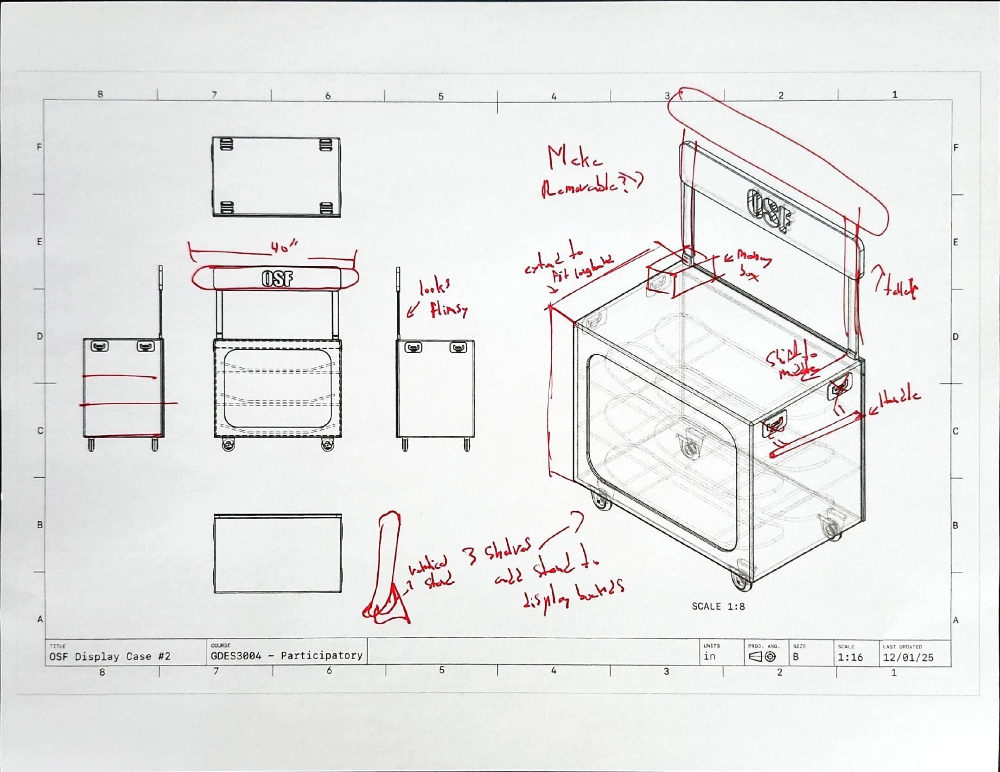
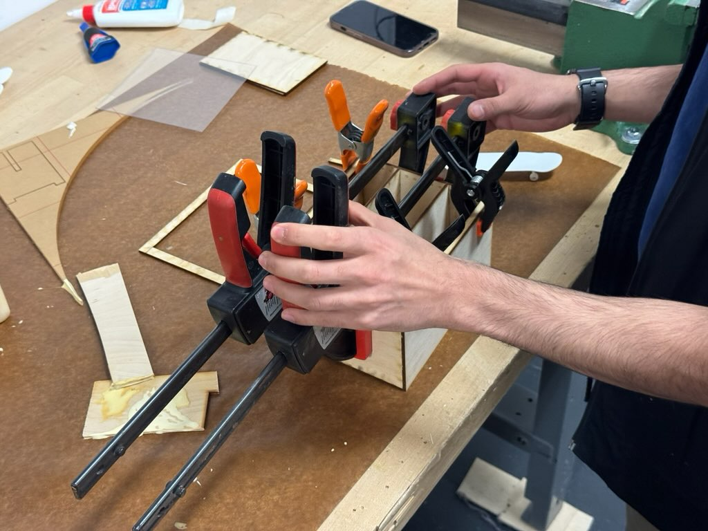
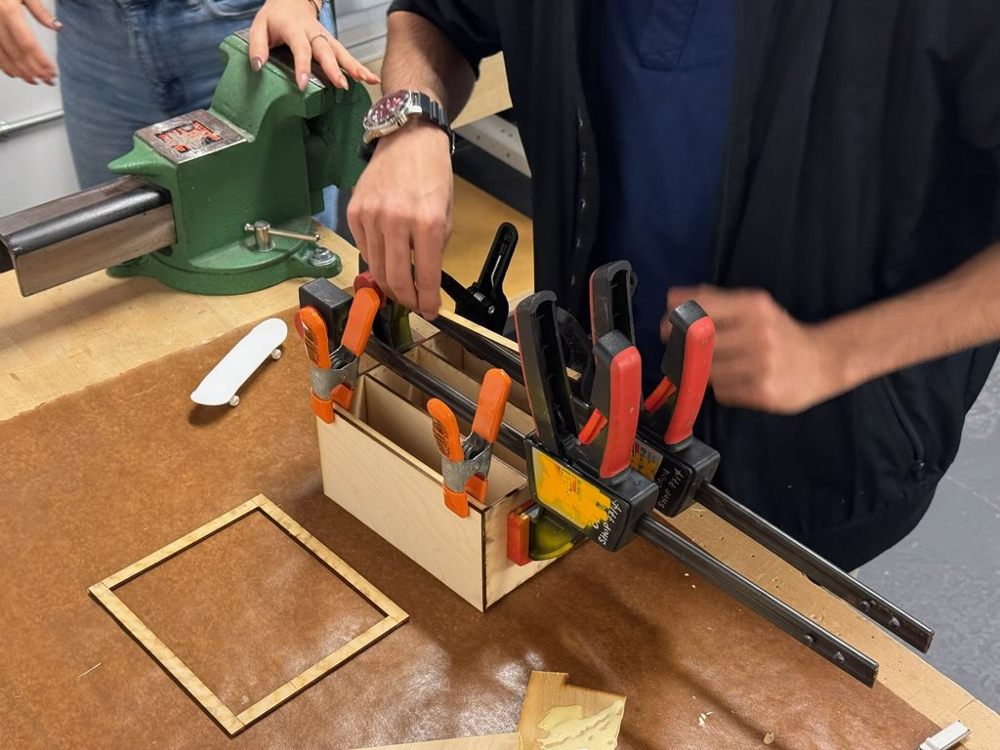

The Problem
OSF's skateboard-display boards had no dedicated way to move or store between events. Students described hauling them by hand ("when you have a lot of them, they get kind of heavy"), watching them get damaged in transit, and losing class time to setup every time a pop-up display went up. There was no secure way to keep boards upright and separated, and outside scheduled pop-ups the work stayed invisible.
OSF had floated its own rough starting idea, a skateboard vending machine, as a jumping-off point for what a fix might look like.
Process

We ran three rounds of co-design sessions directly with OSF students: interviews first, then a collaborative "Yes, And" sketching game where ideas rotated between participants every one to two minutes, followed by group prototyping. Feedback from those sessions was specific and often physical: students asked for a handle, wheels on two faces, room for multiple merchandise types, and interior lighting.

A later technical-drawing review came back covered in red-ink notes: "looks flimsy," "add stand to display banners," questions about height and whether shelves should be removable. My role inside the team was building the tools that made that feedback possible to give and act on: producing technical drawings students could annotate directly, prototyping a 3D-printed board-locking mechanism (later dropped once a tighter shelf fit made it unnecessary), sourcing materials within OSF's Home Depot/RONA-only supply constraint, and, once the design was broken into components, helping work out joinery and materials before producing the small-scale model and its laser-cut file myself.
Solution: 1:16 scale model



Outcome / Reflection
Our final design settled on a removable sign for van transport, pin-adjustable shelving, locking doors, and multi-directional locking castors rated for 225 lbs, sized to display up to 6 boards at once and store as many as 24 (OSF's own preference landed closer to 12–15). OSF staff said they'd rather build the cart themselves than pay to have it manufactured elsewhere, and by the end of the project the students who'd taken part in the co-design sessions had visibly grown into it, going from hesitant to, in our own words, having "expressed pride in the final design."
In my own reflection, I named what the participatory format changed about my usual process: "Participatory design challenged my usual approach by requiring me to step back from taking the lead, listen closely, and build from the students' perspectives rather than imposing my own."